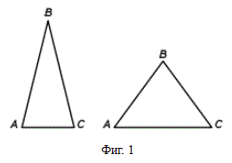

Беседа 3019 от 3877 · Беинса Дуно
Беден и богат
Отче наш.
Имате ли зададена тема? – /Нямаме./ Ако ви се зададе такава една тема: Защо рибите плуват, птиците хвъркат, растенията растат, как ще я разгледате? Или темата може да се каже: Защо човек яде, защо диша, защо мисли, защо чувствува? Тогава, ако се зададе въпросът: „Защо сте недоволни в даден случай?“
Недоволството е много обширно. Недоволен си за какво? Може човек да е недоволен, че не е богат. Може да е недоволен, че не е здрав. Може да е недоволен, че не е учен. Може да е недоволен, защото не е силен. Недоволството има много причини. Някой път ние вземаме една дума в много обширен смисъл. Казва: „Аз съм недоволен.“ В даден случай човек не може да бъде недоволен от всичко. Може ли човек да бъде недоволен от всичко? Той най-първо е недоволен от туй, за което приказваш. Човек щом е недоволен от сиромашията, значи е доволен от нещо. От какво е доволен тогава? Той говори против сиромашията, но като говори против сиромашията, има предвид богатството. Или говориш против насилието, тогава какво имаш предвид?

Аз го вземам това за обяснение за несбъднатите идеи. Кон искаш да яздиш. На какво е символ конят? Конят засега е символ на обективния, на природния ум на човека. Когато човек иска да има кон, той започва в себе си да употребява своя природен ум. Казвам: Дават ви два камъка, вие не можете да направите различието между единия и другия. Единият е скъпоценен, а другият не е скъпоценен. В скъпоценният камък, в какво седи разликата? В неговата твърдост. Скъпоценните камъни се нареждат според твърдостта си от едно, две, до десетостепенни има. Ония, които са най-твърди, са най-скъпи. При това зависи и от чистотата на камъка да пречупва слънчевите лъчи. Колкото кристализирането на този камък е по-правилно, без никакви примеси, колкото по-добре пречупва слънчевата светлина, без никакъв вътрешен дефект, толкова този камък е по-скъп. Ако вие запитате тия скъпоценни камъни при какви условия са добили своята твърдост. Вие казвате, че скъпоценните камъни се отличават със своята твърдост. Диамантът се отличава с най-голяма твърдост, затова е скъпоценен. Тогава, ако приложите твърдостта в човека, ако вашата твърдост е три или четири, или пет, към кой камък ще спадате? Или имате 7, 8, 9, 10. Ако имате вашата способност на твърдостта в десета степен, тогава вие ще имате разбирането на диаманта. Ще бъдете скъпоценен. Да допуснем, че човек има числото десет на своята твърдост. Тази твърдост аз я вземам с човешкия ум, човешките чувства и с човешката воля. Да кажем, че вие се обезсърчавате при най-малките мъчнотии. Сега твърдостта ви каква е? Вие понякой път се обезсърчавате. Разболееш се, уплашиш се, че може да умреш. Значи, човекът, който има твърдост десет, той не се плаши от болест, той не се плаши от сиромашия, той от мечка не се плаши и от змия не се плаши. Той е смел и решителен човек. Щом кажем „смел“, ние минаваме в друга област. Твърдостта означава, че онова, в което мисълта е непоколебима, капитал има. Твърдостта показва, че има един огромен капитал, който не е турен още в обръщение. Да вярва човек в себе си, той най-първо трябва да има твърдост. То е едно чувство постоянно. Нали трябва да вярваме в онова, което е реално? Представете си, че вие сте силен човек. Съзнавате, че имате грамадна сила. Не сте я проявили. Някой човек отвън ви гледа, казва: „Ти нямаш никаква сила.“ Как ще му докажеш? Трябва ли да седнеш да му доказваш, че си много силен? Представете си, че вие може да дигате само с едната ръка десет тона. Колко дигаше Херкулес, един от героите от гръцката митология? /Дигал земята на гърба си./ Като дигал цялата земя, зависиш от него. Ти, който можеш да дигаш десет тона с едната си ръка, този човек ще го хванеш за крака, ще го вдигнеш във въздуха, казваш: „Силен човек ли съм или не съм силен?“ Как мислиш, като го дигнеш нагоре, какво ще каже? Този опит вие всякога трябва да го правите. Да ви кажем, вие от математика нищо не разбирате. Вие кажете: „Дай ми една от трудните задачи.“ Ако аз мога да разрешавам най-трудните задачи, разбирам ли или не разбирам математика? Ти може да ми кажеш, че нищо не разбирам от химия. Хубаво, ако аз за един час отгоре химически мога да превърна един прост метал в скъпоценен, тогава разбирам или не разбирам от химия? Двама души се свадили и казва: „Ти нищо не разбираш от психология“ и аз като ида в пет минути ги примиря и двамата. Как? Лесна работа, аз разбирам. Как ще ги примиря? Виждам, че причината е сто лева. Единият дал сто лева на другия и двамата се опетнили. Всеки извадил револвер, единият държи револвер и другият държи револвер. Единият казва: „Няма да ми искаш сто лева.“ Другият казва: „Ще ми върнеш сто лева.“ Единият казва: „Ти ако не ми ги дадеш, ще те убия.“ Другият казва: „Ако ги искаш, ще те убия.“ Представете си, че и аз ида с трети револвер. Аз казвам и на двамата – аз го вземем в преносен смисъл – казвам: Ако и двамата не се примирите и двамата (ще убия). Една малка смешка. Един учител казва, че дава едно заявление до министъра, не го назначава. Отива веднъж, два пъти, нищо. Казва: „Влизам един път с револвер в ръка.“ Казва: „Казвам му: Или ще ме назначиш, или ще те убия. Като му теглих, казва, един десетокалибрен куршум, казва: Не ме убивай, ще те назнача.“ Един десетокалибрен куршум дал на министъра, десет хиляди лева за лихва. Министърът го назначил.
Да се повърнем към тези двамата. Казвам: Вие защо се карате? – Сто лева му дадох, мене тези пари ми трябват. Изваждам аз, казвам: Заповядайте, аз имам да му давам, давам ви 110 лева и за лихвите. Хванете се за ръка, поздравете се. Как ще се примирят? Изваждам нещо, давам сто и десет лева. Аз имам да му давам на него, аз плащам заради него. Примирете се. Той не е имал никаква умисъл да ги изгуби. Хващат се двамата, примирят се. Следователно, ако вие искате да направите някаква услуга, трябва да дадете нещо от себе си. Казва: „Как да примирим хората?“ – Туй, от което в дадения случай хората се нуждаят, дайте го. Да ви представя сега същия пример в друго отношение. Двама души жадни, единият носи едно малко шишенце с вода. Двамата хванали шишенцето, единият го държи и другият го държи. Единият казва: „Аз пръв да пия.“ Тия хора нямат воля. Единият не иска да даде на другия и другият не иска да даде. И двамата силни, всеки иска неговата воля да бъде. Седят и се карат за едно малко шише, кой да пие вода пръв. Но същевременно нямат доверие. Единият казва: „Ако вземе той водата пръв да пие, за мене нищо няма да остави.“ Един на друг не си вярват. Аз ги примирявам. Нося една голяма българска стомна от десет кила. Казвам: Какъв е спорът? Започват да разправят, че и двамата са жадни, три деня не са пили вода, спорят се за водата в едно шишенце от 50 грама. Турям пред едногото една чаша от 250 грама с вода и пред другия турям също такава чаша. Казвам: Пуснете вашето шишенце. Примирявам тия хора. Сега вие как примирявате себе си? Вие понякой път сте в стълкновение със себе си. Понякой път се гневите на себе си. Недоволен си, че не си учен. Ами че когото и да е мога да го направя учен за един час. Да кажем, вие искате да декламирате едно стихотворение от някой виден поет. Учили сте го веднъж, имате една идея какво е писал, но тъй, както го писал поетът, го нямате. Искате да декламирате идеята, но формата на стихотворението нямате. Вие минавате за невежа. Аз нося книгата на този поет, давам ви я, вие намирате страницата и веднага го декламирате, учен човек сте в дадения случай, стига да имате книгата.
Питам сега: Какво ви дава повод да бъдете недоволен от себе си? Някой от вас казва, че той не е силен. Тогава по кой начин се добива силата? Вие ще кажете, че вие не сте добри. По кой начин се добива доброто? Или казвате: „Аз не съм умен.“ По кой начин се добива умът? Има си начини. По кой начин се добива здравето? Здравето на човека зависи от неговата мисъл. Здравето на човека зависи от неговите чувства. Здравето на човека зависи от неговите постъпки. Зависи от дишането, зависи от храната, зависи от мисълта. Човек, който добре се храни, добре чувствува, добре мисли, винаги ще бъде здрав. Човек, който не е доволен от яденето, не мисли добре, той всякога ще боледува. Общо принципът е верен. Да допуснем, че вие може да се храните цял един месец с грах. Ще бъде ли едно нещастие? Аз веднъж четох една книга, в която един автор разправя, че 6 месеца се е хранил с грах. Тия 6 месеца бил най-щастлив, много разположен вътрешно се усещал и физически, и умствено, и сърдечно. 6 месеца ял човекът грах, но от този, млечния.
Да допуснем, че вие имате недоволство, че вие сте беден. В какво седи недоволството на човека? Вие чувствувате, че сте беден. Какъв е цярът на това? Този въпрос е разрешен. Церът на беднотията е работата. Работа умствена, работа сърдечна, работа физическа. Веднага ще започнеш да работиш. Мисълта е работа в умствения свят. Да мислиш, значи ти си в един свят на най-малко съпротивление. Не можеш да кажеш: „Аз нямам работа.“ В мисловия свят всякога може да работиш. И в сърдечния свят, и в духовния свят, и там можеш да работиш. Мъчнотията остава на физическото поле. И там можеш да работиш. Различава се работата в степените. Някой път работата е приятна. Да допуснем, че си сиромах. Откъде трябва да започнеш? Кои са причините на осиромашаването? Човек може да осиромашее от безразборно ядене. Човек може да осиромашее от безразборно чувствуване и от безразборно мислене може да осиромашее човек. Един американски богаташ, който имал сто милиона долари, имал слабост към растенията. Искал да ходи по цялата земя да събира такива изключителни екземпляри от растения. Имал богата колекция. Най-после изпохарчил всичкото си богатство само за растения, само за цветя. Осиромашал и като умрял, го погребали на общински разноски. Да допуснем, че вие искате да бъдете красив. Събирате мисълта за вашата красота. Те са различни екземпляри. Постоянно мислите да бъдете красив. Какво ще добиете от вашата красота? Ако красотата не може да я пренесете в мисловния свят, ако красотата не може да я снемете в духовния свят и на физическото поле, вие не разбирате законите на красотата. Вие трябва да имате не една статическа красота, но една динамическа красота. Тя е, която може да ви ползува. Коя е статическа красота? Вие имате една статуя хубава, но бихте ли желали да бъдете хубав като тази статуя? Какво ще се ползувате? Тогава само ще имате само една фаза на красотата, една статуя. В какво седи красотата на тази, гръцката Венера? Или в какво седи красотата на Херкулеса? На Венера красотата седи в кривите линии, а на Херкулеса седи в правите линии на силата. Но то е едно статическо положение. Една Венера в кривите линии, пак е в едно статическо положение. Ако сега ви кажа да ми дадете едно статическо положение на един беден човек, който седи при един богат човек, както му се моли умилно. Представете си едно дете на 12 години пред един богат човек и му се моли да му помогне. Я ми кажете как ще си представите туй дете? Може ли да ми представите умилния поглед на туй дете? Вие седите и се молите на Господа. Как ще се молите? Като деца молили сте се, но не само да съберете пръстите на ръцете си, каква физиономия ще вземе туй дете? Ако наблюдавате, вие като срещнете един ваш приятел, когото обичате, веднага вземате една поза инстинктивно или във вашето подсъзнание, или във вашето съзнание, или във вашето самосъзнание, или във вашето свръхсъзнание, една поза имате особена. Като срещнете някого, когото не обичате, веднага вземете друга поза. Вие даже не чувствувате, че сте артист. Казваш: „Не съм артист“ и като срещнеш някого, изведнъж вземаш една поза, или като срещнеш някого, когото обичаш, за него вземаш една поза. Казваш, че не си артист, ти си първокласен артист. Не си артист в туй отношение, че ако вземеш едно огледало, започваш да се рисуваш, не можеш да се нарисуваш. Не си артист да въплотиш онова, но може да си представиш. Но казвам: Туй дете как ще си го представите? С коя дума ще започне? Да кажем, вие сте музикант, искате музикално да му свирите, с кой тон ще започнете? Откъде ще започнете? Мъчни работи са тези.
Сега, ако някой път сте недоволни, че не разсъждавате къде трябва да се бутнете. Ако не разсъждавате, как трябва да си кажете? Или ако кажете на себе си: „Груб съм, че не зная как да постъпвам.“ В какво седи грубостта на човека? Грубостта на човека седи в неговия език, че не знае как да огъва езика си. Или грубостта на човека седи в неговата ръка. Всякога човек изразява своята грубост или чрез ръката си, или чрез езика си. Коя е най-грубата дума, която вие сте чували понякой път, дума, която ви е обиждала? Един македонец казва тъй: „Не само че ми каза „ешек“, но ми каза „ешекомагаре“. Туй не се търпи.“ „Ешек“ може да се търпи, но „магаре“ не може да се понесе. Думата „ешек“ не е обидна на турски. На турски език тя има лошо значение. Но да обясня в какво седи. Представете си, че някой човек ви срещне и ви каже: „Ешек.“ Но зад този ешек ти дава един наполеон. „Хайде за здравето на един ешек да ти дам една английска златна лира.“ В „ешек“ има разширение, никога не лъже ешек. Туй означава. Лошият човек като направи нещо, казва: „Аз го направих. Направих го, може да ме съдите, направих го.“ А пък някой път магарето скрива малко погрешката. Ще я скрие и трябва дълго време да мине. То са тълкувания на две думи, то е в разбирането. Има думи, които нас не ни обиждат, но има думи, които ни обиждат. Българинът казва на детето си „моето прасенце“. На сина си казва „моето прасенце“. Но го употребява в мека форма. Или някой употребява „моето пиленце“. Кой би желал синът му да бъде едно пиленце с една кокоша глава? Но в какво седи мекотата на думата „пиленце“? Този слог ПИ, той сам по себе си има нещо хубаво и красиво. П-то в дадения случай означава плод, който зрее, че като го погледнеш, то е пилето, което зрее хубаво. Като го гледаш, наслаждаваш се, че може един ден да го опиташ. Бащата под думата „пиленце“ вижда известни способности, чувства, казва: „Моето пиленце.“ Виждам, че един ден има нещо, което ще узрее в тебе. Идеята вътре е скрита. Детето разбира и чувствува вътрешния смисъл. Като каже „моето прасенце“, пак същото. Тогава по какво се отличава прасенце? ПРА, какво има в „пра“? Какво има в СЕ? ПРА какво означава? – Чисти се. „Прасе“, значи „чисти се“. Какво лошо има в туй прасе? Той се чисти, той се „пра“. То иска философия. От трептението на една дума зависи вътрешното съдържание на думата. Ти кажеш: „Добро.“ Но доброто зависи от трептенията на думата. Като произнесеш думата, какви трептения има? Ако ти произнесеш думата „любов“, зависи какво съдържание има тази дума. По своето съдържание се разбира тази дума.
Та казвам: Когато вие сте недоволни, анализирайте себе си. Вие сте недоволни, анализирайте вашето недоволство. Или имате едно неразположение, анализирайте вашето неразположение. Имате една крива постъпка, анализирайте нещата всякога. Понеже всичко в природата служи като един възпитател. Човек не може да седи на едно положение. Всичко онова, което ви се случва, то е една необходимост заради вашето развитие. Мислите ли, запример, ако вие идете в планината и ви задуха вятър, че то е едно нещастие? Мислите ли някой път, ако идете, че отгоре ви вали сняг, че то е нещастие? Разбира се, тия неща се различават. Ако зимно време ви вали дъжд, има едно значение, ако в май ви вали дъжд, и при най-хубавите дрехи, които носите, нищо няма да изгубите. Дрехите може да изгубят, но вие ще спечелите. Едно майско наквасване в здравословно отношение е много приятно. Или мислите ли, че ако вие в планината сте видели една мечка, казвате: „Ако беше ме срещнала.“ Мислите ли, че то е едно нещастие? Тази мечка вие ще я срещнете когато и да е. Всичките хора срещат мечки. По-страшна мечка от смъртта има ли? Хората бягат от мечката. Тази мечка ще те срещне. Може да те срещне, когато си на десет години, може да те срещне на 20, на 30, на 40, на 120 години може да те хване тази мечка, и ще те постави на земята. Ще те потъпчи хубаво. След като те потъпче, хората казват: „Замина за другия свят.“ Мечка го е тъпкала, нямало кой да го извади. Каква е разликата между грешните и праведните? Праведният ще се качи на гърба и така отива в другия свят. Мечката го занася. Грешника мечката го влече по земята. Праведният ще се качи на гърба ѝ отгоре. Той като праведен отгоре на гърба на мечката, а грешникът мечката го влече в другия свят. Тази е разликата. Единият се радва, другият скърби, че умира.
Та казвам: Когато вие скърбите, това показва, че не разбирате дълбокия смисъл на живота. Когато се радвате, показва, че мъчнотиите за вас имат смисъл. В туй отношение животът трябва да бъде за вас в своите проявления една радост. Както и да се прояви животът, той ще бъде една радост. Добрият живот трябва да представлява една радост за вас и в най-лошата си форма. Да ви приведа един пример и ще свърша. Минава един богат човек, който не разбира живота, покрай един беден човек. Той не обича бедните хора, блъсва го и казва: „Свиня.“ Този човек пада. Става му мъчно на бедния човек. Върви богатият при един кладенец, на който дъската била слаба и пада в кладенеца. Този, когото той блъснал, отива да вземе едно въже, че го изважда. Щом го спасява, богатият казва: „Ще ми простиш, ще ме извиниш, аз постъпих нечовешки.“ В него веднага става една промяна. Сега, ако този богатият човек не беше обидил сиромаха и ако богатият не беше паднал в кладенеца, и ако сиромахът не беше го извадил навън, какви щяха да бъдат отношенията? Богатият щеше да има презрение към сиромаха и щеше да казва: „Свиня.“ Щом влезе в кладенеца и бедният го извади, богатият мисли, че е умен човек, който мисли. Сега защо става това? – За да се познаят хората. Богатият ще се изяви и сиромахът ще се изяви. Като (се) изявят, ще се разберат. Трябва да се разбирате. В разбирането е животът. Когато хората се разбират, животът има смисъл. Ако хората не се разбират, животът няма смисъл. Ако не се разбирате и вървите в две противоположни посоки, тогава и богатите са нещастни, и сиромасите са нещастни. Пък ако се разбирате и вървите в една посока, тогава и богатите са блажени, и сиромасите са блажени.
Само светлият път на Мъдростта води към Истината.
В Истината е скрит животът!
Онзи, Който постоянно ви изважда от всички мъчнотии, то е Божественият Дух. Постоянно като загазите, Той все ще спусне това въже да ви извади. Да Му благодарите!
XVIII година.
29 лекция на Младежкия окултен клас,
държана от Учителя на 19 май 1939 г., петък, 5 ч. с.
София – Изгрев.